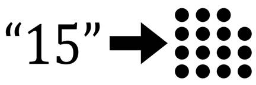

Prev - #31 Convert Integers To Strings | Table of Contents | Next - #33 Comma-Formatted Numbers
convertStrToInt('42') → 42

To complement Exercise #31, “Convert Integers to Strings”, in
this exercise we’ll convert strings of numeric digits into their integer
equivalents. The most common use case for this is taking the string returned
from, say, the input() function or a text file’s read() method and converting it to an integer to perform
mathematical operations on it. You can use Python’s int()
function to do this conversion, but in this exercise, you’ll recreate this
function yourself.
Exercise Description
Write a convertStrToInt() function with
a stringNum parameter. This function returns an
integer form of the parameter just like the int()
function. For example, convertStrToInt('42') should
return the integer 42. The function doesn’t have to
work for floating-point numbers with a decimal point, but it should work for
negative number values.
Avoid using int()in your code, as that
would do the conversion for you and defeat the purpose of this exercise.
However, we do use int() with assert
statements to check that your convertStrToInt()
function works the same as int() for all integers
from -10000 to 9999:
for i in range(-10000, 10000):
assert convertStrToInt(str(i)) == i
Try to write a solution based on the information in this description. If you still have trouble solving this exercise, read the Solution Design and Special Cases and Gotchas sections for additional hints.
Solution Design
The solution for this exercise is quite different than the int-to-string algorithm. Still, they are both similar in that they convert one digit and use a dictionary to map between string digits and integer digits:
DIGITS_STR_TO_INT = {'0': 0, '1': 1, '2': 2, '3': 3, '4': 4, '5': 5, '6': 6, '7': 7, '8': 8, '9': 9}
The function creates an integerNum
variable to hold the integer form of stringNum as we
build it. This variable starts with the value 0.
Your code must also note if there is a minus sign at the start of the string,
in which case
Our algorithm loops over the individual digits in the stringNum parameter, starting on the left and moving
right. The code multiplies current integer in integerNum
by 10 to “move” all of these digits to the left by one place, then adds the
current digit.
For example, if we needed to convert the string '41096' to an integer, the code needs to carry out the following operations:
·
integerNum = 0
·
integerNum = (0 *
10) + 4 = 4
·
integerNum = (4 *
10) + 1 = 41
·
integerNum = (41 *
10) + 0 = 410
·
integerNum = (410
* 10) + 9 = 4109
·
integerNum = (4109 * 10) + 6 = 41096
Before returning, we convert this integer to a negative number if the original string began with a minus sign.
Special Cases and Gotchas
The convertStrToInt() function must be
able to handle strings representing negative integers. To do this, check if stringNum[0] (the first character in the string) is the '-' dash character. If so, we can mark an isNegative variable to True
(and False otherwise). Then we can remove this dash character
by setting stringNum = stringNum[1:], replacing the
string in stringNum with a string of all the
characters in stringNum after the first.
At the end of the function, the function can return -integerNum if isNegative was
set to True.
Now try to write a solution based on the information in the previous sections. If you still have trouble solving this exercise, read the Solution Template section for additional hints.
Solution Template
Try to first write a solution from scratch. But if you have difficulty, you can use the following partial program as a starting place. Copy the following code from https://invpy.com/convertstrtoint-template.py and paste it into your code editor. Replace the underscores with code to make a working program:
def convertStrToInt(stringNum):
# This dictionary maps string digits to single integer digits:
DIGITS_STR_TO_INT = {'0': 0, '1': 1, '2': 2, '3': 3, '4': 4,
'5': 5, '6': 6, '7': 7, '8': 8, '9': 9}
# Make a note whether the number is negative or not, and make
# integerNum positive for the rest of the function's code:
if stringNum[0] == '-':
isNegative = True
stringNum = stringNum[1:] # Remove the negative sign.
else:
isNegative = False
# integerNum holds the converted integer, and starts off at 0:
integerNum = 0
# Loop over the digits in the string from left to right:
for i in range(len(stringNum)):
# Get the integer digit from the string digit:
digit = DIGITS_STR_TO_INT[stringNum[i]]
# Add this to the integer number:
integerNum = (integerNum * 10) + digit
# If the number was originally negative, make the integer
# negative before returning it:
if isNegative:
return -integerNum
else:
return integerNum
The complete solution for this exercise is given in Appendix A and https://invpy.com/convertstrtoint.py. You can view each step of this program as it runs under a debugger at https://invpy.com/convertstrtoint-debug/.
Prev - #31 Convert Integers To Strings | Table of Contents | Next - #33 Comma-Formatted Numbers